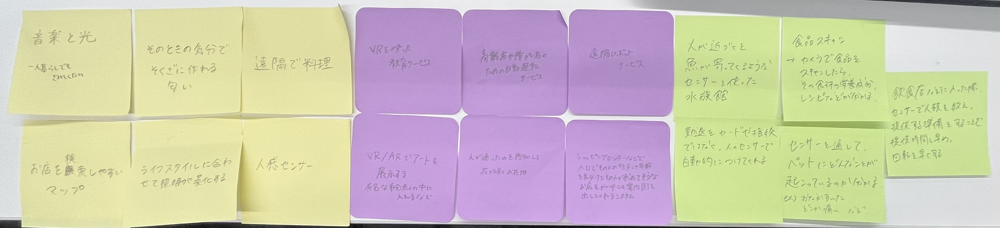

IoTに関して：遠隔で操作、管理させることで、どのような新しいサービスが考えられるか？
ポストイット

スケッチ
「人が近づくと魚が寄ってくる水族館」
センサーで人を感知した時、水槽の上からエサが落ちてきたり、光を当てて魚が近くに来るようにする。
人がいないときは、照明をある程度暗くする。
このシステムがあれば、人間も魚を近くで見ることができて、魚のストレスを少しでも軽減することができるかもしれない。